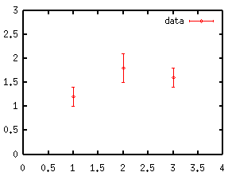
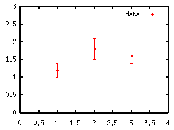

- not so Frequently Asked Questions -
update 2004/9/5
|
|
- not so Frequently Asked Questions - update 2004/9/5
|
|
not so FAQ |
About Legend ... but gnuplot calls it "key"
How do I erase a legend ?There are two ways. The first one is, gnuplot> set nokey and the other one is to use the notitle key word at plotting. In the case below, the data file has a legend but the function does not. gnuplot> plot f(x) notitle, "file.dat" title "data"  How do I change the location of legend ?Usually a legend appears at the top/right corner int the graph. You can change the position with the set key command. If you give the command, gnuplot> set key left bottom the legend goes to left/bottom. Available options are, left, right, top, bottom, outside, and below. You can combine some of them. For example, outside bottom. It is possible to set the position of legend directly. If you want to move it to the position (X,Y)=(100,100), gnuplot> set key 100,100 The coordinate (100,100) is the position of the mid-point between a text and a line/symbol of the first line of the legend. The coordinate is the system defined by the X and Y axes. If you want to place the legend independently of the axes, see coordinate. How do I get rid of error bars in a legend ?When one plots data with error bars, the error bar also appears in the legend (see the figure below). However, even if the data have errors in the Y-direction, the error bar in the legend becomes horizontal one, and usually we do not need such an error bar. Here is a simple way to remove the error bar in the legend. When we plot the next data (test.dat), # X Y Y-error 1.0 1.2 0.2 2.0 1.8 0.3 3.0 1.6 0.2 with the following commands, gnuplot> set xrange [0:4] gnuplot> set yrange [0:3] gnuplot> plot "test.dat" usi 1:2:3 title "data" w yerrorbars 
the error bar in the legend becomes like above.
gnuplot> set xrange [0:4]
gnuplot> set yrange [0:3]
gnuplot> plot "test.dat" usi 1:2:3 notitle w yerrorbars 1,\
"test.dat" usi 1:2 title "data" w points 1
works well.

Location of the text is sometimes strange when Postscript symbols are used in it.Sometimes gnuplot places a text (in title or legend) at wrong position when a postscript symbol -- like "{/Symbol a}" -- is used. For example, you may have an extra white-space at the left side even though you want to place the legend just next to the Y-axis with the command set key left. This happens because gnuplot does not count "{/Symbol a}" as one character. To adjust the location of the legend containing postscript symbols, you have to give its coordinate directly. Adjust the line-skipYou can change the line-skip in the legend with set key spacing command. To make the skip 1.5 times wider, set key spacing 1.5 Make a frame-boxTo make a frame-box around the legend, use set key box . The line-kind for the box is the same as the frame of the graph. You can change this by providing the box keyword followed by an index of the line-kind. Otherwise you can define the linestyle as: gnuplot> set linestyle 1 lt 2 lw 3 gnuplot> set key box linestyle 1 For gnuplot ver.4.0, gnuplot> set style line 1 lt 2 lw 3 gnuplot> set key box linestyle 1 |